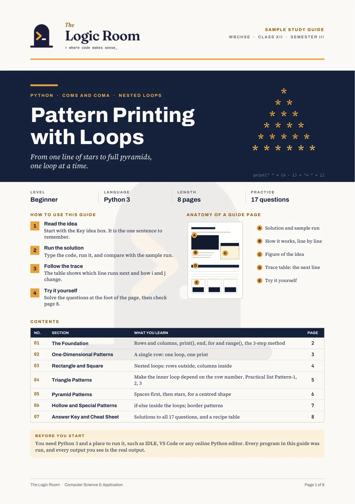

Sample · study notes
Sample · study notes
Transmission Media (Class XI, Computer Networks)
Bilingual notes: English first, Bengali explanation just below, with a diagram for every topic and a quick check at the end.
Open 4-page excerpt (PDF) ↗Ayan “Kuro” Mandal
Web developer · Data Science student (IIT Madras) · CS educator
I build web apps for classrooms and teach computer science to school students. I co-founded Ganitasastram, and I’m studying Data Science at IIT Madras.
Web
Private
Web
Teaching
Teaching
Also: Student Learning App In progress planned for a much larger group of students than the classroom app.
I bring the problem, the context and the resources. AI restructures them and drafts the files. I decide what goes in, check every output, and test it before anyone else uses it.
I write down what the thing must do and who uses it, and gather the real context: requirements, reference material, constraints.
AI proposes a better structure and drafts the code or content files from what I supplied. I stay in the loop at every step.
I read every output, fix what’s wrong, and test it on real cases before it reaches students or teachers.
Statistics, computational thinking, mathematics and English, with more data science focus in later semesters.
Teaching Computer Science and Application, and helping run the institute, including its website, events and digital content.
Three-year honours degree in Computer Science.
Taught mathematics, science and computer subjects to school students.
5+
Years of teaching
5–12
Classes taught
3
Boards: WBCHSE, CBSE and ICSE
2
Languages: English and Bengali material
Also available: private coding sessions.
Sample · study notes
Bilingual notes: English first, Bengali explanation just below, with a diagram for every topic and a quick check at the end.
Open 4-page excerpt (PDF) ↗
Sample · Python study guideA step-by-step Python guide built around the rows-and-columns model: from one line of stars to full pyramids. 8 pages and 17 practice questions with answers.
Open the 8-page sample (PDF) ↗
YouTube · Video
New lessons and paper solutions go up on the channel as they are ready.
All notes →More posts are on the way.
Open to computer-related roles: web development, data analysis and teaching. I like work where I build things and explain them clearly.
I hold a B.Sc. (Honours) in Computer Science. I work in Python, C, C++, Java and SQL, and with React, Firebase and Wix Velo. I am now studying Data Science at IIT Madras.
It holds real student data, so it isn’t public. I’m glad to demo it on a call.
English and Bengali.
Click the little mascot in the corner to open the contact form, or message me on LinkedIn.